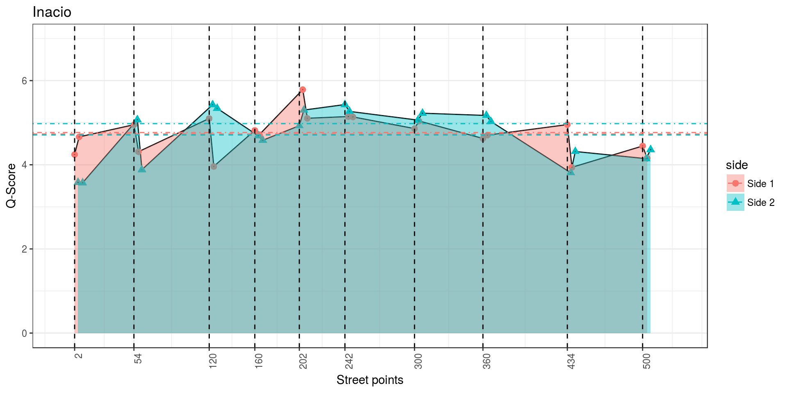
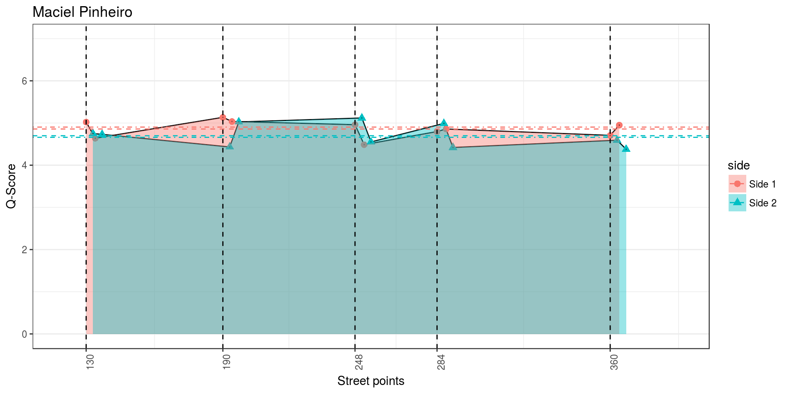

analisaPorRua2
Aqui apresenta-se uma análise mais detalhada, rua a rua, a partir das percepções capturadas.
Alguns pontos importantes:
- O número da rua indica o que? Metros? http://campinagrandepb.com.br/wp-content/uploads/2014/10/codigo-de-obras-Lei-5410.131.pdf
- Índices de dispersão/quebra (entre números da rua, entre lados da rua, no mesmo lado, etc.)? Séries temporais?
- Anomalias? https://www.datascience.com/blog/python-anomaly-detection
- Derivadas, máximos e mínimos locais? Pacote features do R?
TO DO:
- Refinar o método
- Escrever os passos
- Aperfeiçoar visualização (diferença entre linhas?)
- Gerar mais pontos nas ruas mais heterogêneas?
- Cristina e Inácio?
- Qual o nível de incerteza nos pontos?
- Surprise Maps? https://medium.com/@uwdata/surprise-maps-showing-the-unexpected-e92b67398865
- Surprise entre ruas? Tendo como base um modelo uniforme, ou média das ruas
- Surprise na rua? Tendo como base um modelo uniforme, ou a média dos pontos
Avaliar o mínimo de respostas necessárias?
- O que um especialista diria de útil na análise
Comparação de modelo treinado x pessoas respondendo? Vantagens e desvantagens?
De acordo com a heterogeneidade de cada rua (abaixo) vamos apresentar a discussão, a partir da próxima seção, da mais heterogênea para a mais homogênea.
## labels variable value
## 1 Gini cristina 0.06451732
## 2 Gini edesio 0.05767443
## 3 Gini inacio 0.05316014
## 4 Gini floriano 0.03804141
## 5 Gini maciel 0.03277675
## 6 Gini manoel 0.02920358## labels variable value
## 1 Entropy cristina 0.009060597
## 2 Entropy edesio 0.005207376
## 3 Entropy inacio 0.004667139
## 4 Entropy floriano 0.002341453
## 5 Entropy maciel 0.001702221
## 6 Entropy manoel 0.001390847## labels variable value
## 1 SD cristina 0.6397101
## 2 SD edesio 0.4946799
## 3 SD inacio 0.4749388
## 4 SD floriano 0.3509230
## 5 SD maciel 0.2875672
## 6 SD manoel 0.1971500O que procurar?
- Ponto mais heterogeneo/homogeneo
- Melhor e pior local da rua
- Melhor e pior área da rua (considerando os dois lados)
- Áreas muito diferentes entre lados
- Descontinuidades no mesmo lado
- Heterogeneidade/Homogeneidade no ponto -> Isso tudo pode ser explicado pela regressão geral das features?
- O que é a rua?
Cristina Procópio
##
## Shapiro-Wilk normality test
##
## data: cristina$qscore
## W = 0.83573, p-value = 0.003102## mean sd
## 4.92394878 0.62351231
## (0.13942159) (0.09858595)## [1] ">>> GINI da rua: "## [1] 0.06451732## num value
## 1 305 0.11193874
## 2 436 0.05106366
## 3 66 0.03034427
## 4 2 0.02561922
## 5 261 0.02374617## num value
## 1 2 -2.3776715
## 2 436 2.3313726
## 3 305 -0.6830362
## 4 261 0.5183015
## 5 66 0.4040115## num value
## 1 2 NaN
## 2 66 NaN
## 3 261 NaN
## 4 305 NaN
## 5 436 NaN## Adding missing grouping variables: `num`
| xlabel | side | V3 | street | num | angle |
|---|---|---|---|---|---|
| 2 - p1 | Side 1 | 4.794746 | R._Cristina_Procópio_Silva | 2 | 45 |
| 2 - p2 | Side 1 | 4.521649 | R._Cristina_Procópio_Silva | 6 | 293 |
| 66 - p1 | Side 1 | 5.498587 | R._Cristina_Procópio_Silva | 66 | 45 |
| 66 - p2 | Side 1 | 5.445511 | R._Cristina_Procópio_Silva | 70 | 315 |
| 261 - p1 | Side 1 | 5.146898 | R._Cristina_Procópio_Silva | 264 | 22 |
| 261 - p2 | Side 1 | 5.436423 | R._Cristina_Procópio_Silva | 268 | 315 |
| 305 - p1 | Side 1 | 4.794370 | R._Cristina_Procópio_Silva | 308 | 45 |
| 305 - p2 | Side 1 | 5.248873 | R._Cristina_Procópio_Silva | 312 | 293 |
| 436 - p1 | Side 1 | 5.390811 | R._Cristina_Procópio_Silva | 436 | 135 |
| 436 - p2 | Side 1 | 5.194900 | R._Cristina_Procópio_Silva | 440 | 22 |
| 2 - p1 | Side 2 | 5.075437 | R._Cristina_Procópio_Silva | 5 | 135 |
| 2 - p2 | Side 2 | 5.093690 | R._Cristina_Procópio_Silva | 9 | 225 |
| 66 - p1 | Side 2 | 4.753867 | R._Cristina_Procópio_Silva | 69 | 135 |
| 66 - p2 | Side 2 | 5.597781 | R._Cristina_Procópio_Silva | 73 | 225 |
| 261 - p1 | Side 2 | 4.814955 | R._Cristina_Procópio_Silva | 261 | 135 |
| 261 - p2 | Side 2 | 5.243110 | R._Cristina_Procópio_Silva | 265 | 225 |
| 305 - p1 | Side 2 | 3.042971 | R._Cristina_Procópio_Silva | 305 | 135 |
| 305 - p2 | Side 2 | 3.835359 | R._Cristina_Procópio_Silva | 309 | 225 |
| 436 - p1 | Side 2 | 4.121735 | R._Cristina_Procópio_Silva | 439 | 203 |
| 436 - p2 | Side 2 | 5.427303 | R._Cristina_Procópio_Silva | 443 | 315 |
++++++ Median all 4.82805601761
++++++ Mean all 4.68088452294575
++++++ Median street 5.120294178195
++++++ Mean street 4.9239487770125
| street | mean | median | gini |
|---|---|---|---|
| R._Manoel_Pereira_de_Araújo | 3.657009 | 3.657492 | 0.0292036 |
| R._Edésio_Silva | 4.772361 | 4.826342 | 0.0576744 |
| R._Maciel_Pinheiro | 4.840168 | 4.883088 | 0.0327768 |
| R._Inácio_Marquês_da_Silva | 4.842319 | 5.081200 | 0.0531601 |
| R._Cristina_Procópio_Silva | 4.923949 | 5.120294 | 0.0645173 |
| Av._Mal._Floriano_Peixoto | 5.049501 | 5.066083 | 0.0380414 |
worst
R._Cristina_Procópio_Silva_2_45-> 4.794746
best
R._Cristina_Procópio_Silva_2_135-> 5.075437
best
R._Cristina_Procópio_Silva_2_225-> 5.09369
worst
R._Cristina_Procópio_Silva_2_293-> 4.521649
best
R._Cristina_Procópio_Silva_66_45-> 5.498587
worst
R._Cristina_Procópio_Silva_66_135-> 4.753867
best
R._Cristina_Procópio_Silva_66_225-> 5.597781
best
R._Cristina_Procópio_Silva_66_315-> 5.445511
best
R._Cristina_Procópio_Silva_261_22-> 5.146898
worst
R._Cristina_Procópio_Silva_261_135-> 4.814955
best
R._Cristina_Procópio_Silva_261_225-> 5.243109
best
R._Cristina_Procópio_Silva_261_315-> 5.436423
worst
R._Cristina_Procópio_Silva_305_45-> 4.79437
worst
R._Cristina_Procópio_Silva_305_135-> 3.04297
worst
R._Cristina_Procópio_Silva_305_225-> 3.835359
best
R._Cristina_Procópio_Silva_305_293-> 5.248873
best
R._Cristina_Procópio_Silva_436_22-> 5.1949
best
R._Cristina_Procópio_Silva_436_135-> 5.390811
worst
R._Cristina_Procópio_Silva_436_203-> 4.121735
best
R._Cristina_Procópio_Silva_436_315-> 5.427303
- Locais problemáticos na rua (olhando as fotos):
- 2 side1 (terreno com lixo)
- 305 side2 (lixo, pouca manutenção)
- 436 side2 203 (construção/menor manutenção)
- Virtudes na rua (olhando as fotos):
- 2 side2 (prédios bem mantidos, verde)
- 66 inteiro (prédios bem mantidos, verde)
- 261 inteiro (verde, prédios bem mantidos)
- 436 menos o 203 (verde, casas bem mantidas)
Olhando os Q-Scores ao longo da rua
- Melhor e pior local da rua:
- 66-p2 side2 (melhor)
- 305-p1 side2 (pior) diferença de 2.5 -> boa manutenção, verde, ruas largas x falta de manutenção, lixo
- Melhor e pior lado da rua:
- O side1 parece ligeiramente melhor (2 side2, 66 empate, 261, 305, 436 side1)
- Melhor e pior área da rua (considerando os dois lados):
- 66 a 261 side1 (melhor)
- 305 a 436 side2 (pior) menor dif. de aprox. 2.1 -> verde, boa manutenção x lixo, menor manutenção, menos verde aparente (no 436 tem um ponto bacana que tem verde e boa manutenção, o outro nem tanto)
- Áreas muito diferentes entre lados:
- 305 a 436 menor diferenca de aprox. 1 -> boa manutenção, verde x lixo, pouca manutenção, menos verde aparente (no 436 tem um ponto bacana que tem verde e boa manutenção, o outro nem tanto)
- Descontinuidades no mesmo lado
- 66 side2 dif de 0.8 -> manutenção e verde aparente
- 305 side2 dif de 0.8 -> no meio da falta de manutenção, lixo a segunda imagem tem um prédio melhor conservado
- 305 side1 dif. de 0.45 -> mais prédios mais conservados
- 436 side2 dif. de 1.3 -> mais verde aparente, construção/manutenção
- Heterogeneidade/Homogeneidade no ponto:
- os pontos mais heterogêneros foram o 305 (lixo, falta de manutenção) e 436 (falta de manuteção, verde aparente).
- o mais homogêneo foi o 261 que é um ponto bem mantido e com verde
- Foram encontrados os problemas?
- Dois (305 e 436) dos três pontos foram encontrados. Tanto no número 305 como no 436, dentre os pontos avaliados, pôde-se perceber locais que necessitam de melhoria na rua.
- O ponto 2 seria encontrado se seguissemos a lista de heterogeneidade (2 mais homogeneo) ou se avaliassemos diferenças entre os dois lados por ponto (complicado em vários casos).
- Além disso, no ponto 66 sugere-se uma melhoria com um pouco mais de verde de modo a homogenizar ainda mais o ponto.
- O que é a rua?
- A nota média/mediana é boa ou ruim? De mediana para boa
- Existe muita variação? Variações de locais melhores e piores ao longo de toda a rua, alguns números com grande variação no local
- Existe um lado melhor? No final da rua side1 parece despertar maiores preferências que o outro lado. Média e mediana de side1 melhores
- Existe uma área melhor pior? Conforme questão 4 do número 66 ao 261 parece termos a melhor área da rua e do número 305 ao 436 a pior área.
Olhando o surprise maps (uniforme + base rate + normal)
- Máximo e Mínimo?
- 66 p2 side2
- 305 p1 side2 diferença de 2.5 -> boa manutenção, verde, ruas largas x falta de manutenção, lixo
- Mais diversidade?
- 436, 1 estranho: verde, manutenção x construção, menor manutenção, problema na pista, lixo
- 305, 2 lados separados: verde, manutenção x lixo, muro acabado
- 66, 1 estranho: verde, prédios bem mantidos x verde menos destacado, manutenção
- 261, 1 estranho: verde, boa manutenção x lixo, árvores pequenas, poste
- 2, 2 lados separados: verde, prédios mantidos x terreno, lixo
- Menor diversidade?
- 2 como ponto mais homogêneo, mas ainda assim com dispersão
- Diferenças/saltos no lado?
- 436, side2
- 261, side2
- 66, side2 -> recaem nos estranhos apontados acima
- Avaliação Problemas
- Pesquisador: 3 problemas (descritos acima)
- Recall = método / pesquisador = 3/3 = 1
- Precisão = reais / método = 4/5 = 0.8 (menos o 66 1 estranho)
- Avaliação Virtudes
- Pesquisador: 4 virtudes (descritos acima)
- Recall = método / pesquisador = 4/4 = 1
- Precisão = reais / método = 4/5 = 0.75 (menos o 305 2 lados separdos)
- Descrição
- Média/mediana: 4.92/5.12 > 4.68/4.82 -> rua de mediana para boa
- Variação no surprise? Variações ao longo da rua, alternando locais legais e não tão legais
- Lado melhor? Side1 (8) x Side2 (5)
- Região melhor? não fica claro no surprise, mas nos scores pode-se falar do 66 ao 261
Edésio Silva
##
## Shapiro-Wilk normality test
##
## data: edesio$qscore
## W = 0.93872, p-value = 0.2268## mean sd
## 4.77236112 0.48215430
## (0.10781298) (0.07623529)## [1] ">>> GINI da rua: 0.0576744342800989"## num value
## 1 70 0.070664761
## 2 602 0.052659204
## 3 1136 0.034716327
## 4 306 0.022600278
## 5 1546 0.005414004## num value
## 1 602 3.51805338
## 2 70 -1.06657797
## 3 306 0.52119916
## 4 1136 -0.38017671
## 5 1546 0.06881856## num value
## 1 70 NaN
## 2 306 NaN
## 3 602 NaN
## 4 1136 NaN
## 5 1546 NaN## Adding missing grouping variables: `num`
| xlabel | side | V3 | street | num | angle |
|---|---|---|---|---|---|
| 70 - p1 | Side 1 | 3.881736 | R._Edésio_Silva | 70 | 135 |
| 70 - p2 | Side 1 | 5.459569 | R._Edésio_Silva | 74 | 22 |
| 306 - p1 | Side 1 | 4.748159 | R._Edésio_Silva | 306 | 135 |
| 306 - p2 | Side 1 | 4.993888 | R._Edésio_Silva | 310 | 22 |
| 602 - p1 | Side 1 | 4.537421 | R._Edésio_Silva | 602 | 135 |
| 602 - p2 | Side 1 | 5.125127 | R._Edésio_Silva | 606 | 22 |
| 1136 - p1 | Side 1 | 4.508766 | R._Edésio_Silva | 1136 | 135 |
| 1136 - p2 | Side 1 | 4.061773 | R._Edésio_Silva | 1140 | 22 |
| 1546 - p1 | Side 1 | 5.200790 | R._Edésio_Silva | 1546 | 135 |
| 1546 - p2 | Side 1 | 5.153065 | R._Edésio_Silva | 1550 | 22 |
| 70 - p1 | Side 2 | 4.444845 | R._Edésio_Silva | 73 | 203 |
| 70 - p2 | Side 2 | 4.117668 | R._Edésio_Silva | 77 | 315 |
| 306 - p1 | Side 2 | 5.316674 | R._Edésio_Silva | 309 | 203 |
| 306 - p2 | Side 2 | 4.895543 | R._Edésio_Silva | 313 | 315 |
| 602 - p1 | Side 2 | 4.276371 | R._Edésio_Silva | 605 | 203 |
| 602 - p2 | Side 2 | 5.441191 | R._Edésio_Silva | 609 | 315 |
| 1136 - p1 | Side 2 | 4.165650 | R._Edésio_Silva | 1139 | 203 |
| 1136 - p2 | Side 2 | 4.757140 | R._Edésio_Silva | 1143 | 315 |
| 1546 - p1 | Side 2 | 5.114107 | R._Edésio_Silva | 1549 | 203 |
| 1546 - p2 | Side 2 | 5.247739 | R._Edésio_Silva | 1553 | 315 |
++++++ Median all 4.82805601761
++++++ Mean all 4.68088452294575
++++++ Median street 4.8263416206
++++++ Mean street 4.772361115532
| street | mean | median | gini |
|---|---|---|---|
| R._Manoel_Pereira_de_Araújo | 3.657009 | 3.657492 | 0.0292036 |
| R._Edésio_Silva | 4.772361 | 4.826342 | 0.0576744 |
| R._Maciel_Pinheiro | 4.840168 | 4.883088 | 0.0327768 |
| R._Inácio_Marquês_da_Silva | 4.842319 | 5.081200 | 0.0531601 |
| R._Cristina_Procópio_Silva | 4.923949 | 5.120294 | 0.0645173 |
| Av._Mal._Floriano_Peixoto | 5.049501 | 5.066083 | 0.0380414 |
best
R._Edésio_Silva_70_22-> 5.459569
worst
R._Edésio_Silva_70_135-> 3.881736
worst
R._Edésio_Silva_70_203-> 4.444845
worst
R._Edésio_Silva_70_315-> 4.117668
best
R._Edésio_Silva_306_22-> 4.993888
worst
R._Edésio_Silva_306_135-> 4.748159
best
R._Edésio_Silva_306_203-> 5.316674
best
R._Edésio_Silva_306_315-> 4.895543
best
R._Edésio_Silva_602_22-> 5.125127
worst
R._Edésio_Silva_602_135-> 4.537421
worst
R._Edésio_Silva_602_203-> 4.276371
best
R._Edésio_Silva_602_315-> 5.441191
worst
R._Edésio_Silva_1136_22-> 4.061773
worst
R._Edésio_Silva_1136_135-> 4.508766
worst
R._Edésio_Silva_1136_203-> 4.16565
worst
R._Edésio_Silva_1136_315-> 4.75714
best
R._Edésio_Silva_1546_22-> 5.153065
best
R._Edésio_Silva_1546_135-> 5.20079
best
R._Edésio_Silva_1546_203-> 5.114107
best
R._Edésio_Silva_1546_315-> 5.247739
- Locais problemáticos na rua (olhando as fotos):
- 70 side1 135 (construção, menor manutenção, lixo) e side2 315 (menor manutenção), 203 (um pouco de lixo e menor manutenção);
- 602 side 203 (terreno com muito lixo);
- 1136 todos os lados (pouca manutenção, lixo, terrenos);
- Virtudes na rua (olhando as fotos):
- 70 22 (verde, casas bem mantidas)
- 306 menos o 315 (verde, casas bem mantidas)
- 602 22 e 315 (verde, casas bem mantidas)
- 1546 todo (casas bem mantidas, verde)
Olhando os Q-Scores ao longo da rua
- Melhor e pior local da rua:
- 602 p2 side2
- 70 p1 side1. Dif de 1.6 -> boa manutenção, algum verde x construção, pouca manutenção, sem verde
- Melhor e pior lado da rua:
- Não fica claro
- Melhor e pior área da rua (considerando os dois lados):
- confuso, não dá pra discernir facilmente
- Áreas muito diferentes entre lados:
- 70 a 306 melhora em side2 e piora em side1
- No side1 temos um ponto muito bom (70, 22) que foge do padrão de melhoria que sairia de pouca manutenção e falta de áŕvore para melhor manutenção e mais árvores.
- No side2 temos uma certa melhoria de manutenção + árvores aparentes
- 70 a 306 melhora em side2 e piora em side1
- Descontinuidades no mesmo lado
- 70 no side1, diferença de 1.55 -> construção, falta de verde x melhor manutenção, verde
- 602 no side1, diferença de 0.6 -> falta de manutenção, menos verde aparente x melhor manutenção, verde
- 602 no side2, diferença de 1.15 -> manutenção, verde x lixão
- 1136 no side2, diferença de 0.6 -> lixão
- Heterogeneidade/Homogeneidade no ponto:
- os pontos mais heterogêneos foram o 70 (construção, menor manutenção x melhor manutenção e algum verde) e 602 (menor manutenção, lixão x melhor manutenção, verde)
- o ponto mais homogêneo foi o 1546, é bem mantido e com alguma vegetação.
- Foram encontrados os problemas?
- O número 1136 no side1 não foi apontado dentre os 5 problemas levantados.
- O 1136 seria encontrado (diferença de 0.45) se continuássemos olhando as descontinuidades no mesmo lado da rua ou as piores notas (2 pior nota)
- O que é a rua?
- A nota média/mediana é boa ou ruim? De mediana para boa
- Existe muita variação? Variações de locais melhores e piores ao longo de toda a rua, alguns números com grande variação no local
- Existe um lado melhor? Não
- Existe uma área melhor pior? Não
Olhando o surprise maps (uniforme + base rate + normal)
- Máximo e Mínimo?
- 602 p2 side2
- 70 p1 side1. Dif de 1.6 -> boa manutenção, algum verde x construção, pouca manutenção, sem verde
- Mais diversidade?
- 1546, p2 side1 estranho: ??
- 306, p1 side1 estranho: material de construção
- 602, um ponto de cada side separado: casas bem mantidas, verde x terreno, muro mal mantido
- 1136, um ponto de cada side separado: casa melhor mantida, verde x terreno, casas muito mal mantidas
- 70, p2 side1 estranho: casa bem mantida, verde x construção, casas mal mantidas, casas mais simples, carro
- Menor diversidade?
- Não tem ponto homogêneo
- Diferenças/saltos no lado?
- 1136, um ponto de cada side separado
- 602, um ponto de cada side separado
- Avaliação Problemas
- Pesquisador: 3 problemas (descritos acima)
- Recall = método / pesquisador = 2.5/3 = 0.833 (dois de 4 problemas faltando no 1136)
- Precisão = reais / método = 3/5 = 0.6 (1546 tem problema? 306 nao foi percebido) 6 Avaliação Virtudes
- Pesquisador: 4 virtudes (descritos acima)
- Recall = método / pesquisador = 3.75/4 = 0.93 (1 ponto do 1546 ficou como estranho negativo)
- Precisão = reais / método = 4/5 = 0.75 (menos o 1136)
- Descrição
- Média/mediana: 4.77/4.82 > 4.68/4.82 -> rua de mediana para boa
- Variação no surprise? Variações ao longo da rua, alternando locais legais e não tão legais
- Lado melhor? Não fica tão claro, Side1 (5) x Side2 (6)
- Região melhor? não fica claro nem no surprise e nem nos scores
Inácio Marques
##
## Shapiro-Wilk normality test
##
## data: inacio$qscore
## W = 0.87607, p-value = 0.01504## mean sd
## 4.84231882 0.46291311
## (0.10351052) (0.07319299)## [1] ">>> GINI da rua: 0.0531601377276022"## num value
## 1 54 0.059452874
## 2 120 0.048669162
## 3 360 0.030864204
## 4 239 0.009656987
## 5 500 0.004817261## num value
## 1 360 6.68498596
## 2 54 -1.53573452
## 3 120 1.39768433
## 4 239 0.11506616
## 5 500 -0.04594212## num value
## 1 54 NaN
## 2 120 NaN
## 3 239 NaN
## 4 360 NaN
## 5 500 NaN## Adding missing grouping variables: `num`
| xlabel | side | V3 | street | num | angle |
|---|---|---|---|---|---|
| 54 - p1 | Side 1 | 5.056521 | R._Inácio_Marquês_da_Silva | 54 | 112 |
| 54 - p2 | Side 1 | 4.395569 | R._Inácio_Marquês_da_Silva | 58 | 203 |
| 120 - p1 | Side 1 | 5.181490 | R._Inácio_Marquês_da_Silva | 120 | 112 |
| 120 - p2 | Side 1 | 4.148817 | R._Inácio_Marquês_da_Silva | 124 | 203 |
| 239 - p1 | Side 1 | 5.404294 | R._Inácio_Marquês_da_Silva | 242 | 90 |
| 239 - p2 | Side 1 | 5.155989 | R._Inácio_Marquês_da_Silva | 246 | 203 |
| 360 - p1 | Side 1 | 4.506270 | R._Inácio_Marquês_da_Silva | 360 | 90 |
| 360 - p2 | Side 1 | 4.681430 | R._Inácio_Marquês_da_Silva | 364 | 203 |
| 500 - p1 | Side 1 | 4.425882 | R._Inácio_Marquês_da_Silva | 500 | 90 |
| 500 - p2 | Side 1 | 4.340677 | R._Inácio_Marquês_da_Silva | 504 | 203 |
| 54 - p1 | Side 2 | 5.225810 | R._Inácio_Marquês_da_Silva | 57 | 22 |
| 54 - p2 | Side 2 | 3.968053 | R._Inácio_Marquês_da_Silva | 61 | 293 |
| 120 - p1 | Side 2 | 5.337336 | R._Inácio_Marquês_da_Silva | 123 | 22 |
| 120 - p2 | Side 2 | 5.399040 | R._Inácio_Marquês_da_Silva | 127 | 293 |
| 239 - p1 | Side 2 | 5.325490 | R._Inácio_Marquês_da_Silva | 239 | 22 |
| 239 - p2 | Side 2 | 5.253824 | R._Inácio_Marquês_da_Silva | 243 | 270 |
| 360 - p1 | Side 2 | 5.165576 | R._Inácio_Marquês_da_Silva | 363 | 22 |
| 360 - p2 | Side 2 | 5.105879 | R._Inácio_Marquês_da_Silva | 367 | 270 |
| 500 - p1 | Side 2 | 4.343081 | R._Inácio_Marquês_da_Silva | 503 | 22 |
| 500 - p2 | Side 2 | 4.425348 | R._Inácio_Marquês_da_Silva | 507 | 270 |
++++++ Median all 4.82805601761
++++++ Mean all 4.68088452294575
++++++ Median street 5.081199900335
++++++ Mean street 4.842318816532
| street | mean | median | gini |
|---|---|---|---|
| R._Manoel_Pereira_de_Araújo | 3.657009 | 3.657492 | 0.0292036 |
| R._Edésio_Silva | 4.772361 | 4.826342 | 0.0576744 |
| R._Maciel_Pinheiro | 4.840168 | 4.883088 | 0.0327768 |
| R._Inácio_Marquês_da_Silva | 4.842319 | 5.081200 | 0.0531601 |
| R._Cristina_Procópio_Silva | 4.923949 | 5.120294 | 0.0645173 |
| Av._Mal._Floriano_Peixoto | 5.049501 | 5.066083 | 0.0380414 |
best
R._Inácio_Marquês_da_Silva_54_22-> 5.22581
best
R._Inácio_Marquês_da_Silva_54_112-> 5.056521
worst
R._Inácio_Marquês_da_Silva_54_203-> 4.395569
worst
R._Inácio_Marquês_da_Silva_54_293-> 3.968053
best
R._Inácio_Marquês_da_Silva_120_22-> 5.337336
best
R._Inácio_Marquês_da_Silva_120_112-> 5.18149
worst
R._Inácio_Marquês_da_Silva_120_203-> 4.148817
best
R._Inácio_Marquês_da_Silva_120_293-> 5.39904
best
R._Inácio_Marquês_da_Silva_239_22-> 5.32549
best
R._Inácio_Marquês_da_Silva_239_90-> 5.404294
best
R._Inácio_Marquês_da_Silva_239_203-> 5.155989
best
R._Inácio_Marquês_da_Silva_239_270-> 5.253824
best
R._Inácio_Marquês_da_Silva_360_22-> 5.165576
worst
R._Inácio_Marquês_da_Silva_360_90-> 4.50627
worst
R._Inácio_Marquês_da_Silva_360_203-> 4.681429
best
R._Inácio_Marquês_da_Silva_360_270-> 5.105879
worst
R._Inácio_Marquês_da_Silva_500_22-> 4.343081
worst
R._Inácio_Marquês_da_Silva_500_90-> 4.425882
worst
R._Inácio_Marquês_da_Silva_500_203-> 4.340677
worst
R._Inácio_Marquês_da_Silva_500_270-> 4.425348
- Locais problemáticos na rua (olhando as fotos):
- 54 angulos 203 e 293 (falta de manutenção e verde);
- 120 angulo 203 (falta de manutenção, lixo e verde);
- 360 angulos 90 e 203 (terreno);
- todo o número 500
- Virtudes na rua (olhando as fotos):
- 54, 22 (casas bem mantidas, verde)
- 120, 22 e 293 (casas bem mantidas, verde)
- 239 todo (casas bem mantidas, verde)
- 360, 22 e 270 (museu, verde, boa manutenção)
Olhando os Q-Scores ao longo da rua
- Melhor e pior local da rua:
- 239 p1 side1
- 54 p2 side2. Diferenca de 1.45 -> boa manutenção, algum verde x menor manutenção, lixo
- Melhor e pior lado da rua:
- O side2 parece ligeiramente melhor (54 e 239 empate (uma foto de um lado e outra do outro), 500 empate com igualdade, 120 e 360 side2)
- Melhor e pior área da rua (considerando os dois lados):
- 239 a 360 (melhor)? manutenção, verde, museu, apesar de duas visões de terreno que tiveram notas não tão ruins
- Áreas muito diferentes entre lados:
- 120 a 239 -> no 239 temos um maior equilíbrio bom entre todos os pontos (boa manutenção, verde), mas no 120 temos um ponto pior para o side1 (menor manutenção, lixo, ausência de verde)
- Descontinuidades no mesmo lado:
- 54 side1, diferenca de 1.2 -> melhor manutenção x pior manutenção
- 54 side2, diferença de 0.6 -> melhor manutenção, verde x pior manutenção, falta de verde
- 120 side1, diferença de 1.1 -> melhor manutenção, verde x pior manutenção, falta de verde
- Heterogeneidade/Homogeneidade no ponto:
- os pontos mais heterogêneos foram o 54 (pior manutenção, falta de verde x melhor manutenção, verde) e 120 (pior manutenção, falta de verde x melhor manutenção);
- o mais homogêneo foi o 500 (pouca manutenção, muros, terrenos)
- Foram encontrados os problemas?
- Dos 4 pontos levantados o 360 não foi percebido pelas perguntas acima.
- Se olhássemos o terceiro ponto mais heterogêneo encontraríamos o problema do ponto 360 (menor diferença de 0.4) ou como os pontos de cada lado tem notas parecidas se olhássemos diferenças entre lados no ponto.
- O que é a rua?
- A nota média/mediana é boa ou ruim? De mediana para boa
- Existe muita variação? Variações de locais melhores e piores ao longo de toda a rua, alguns números com grande variação no local
- Existe um lado melhor? Side2 ligeiramente melhor
- Existe uma área melhor pior? Não
Olhando o surprise maps (uniforme + base rate + normal)
- Máximo e Mínimo?
- 239 p1 side1
- 54 p2 side2. Diferenca de 1.45 -> boa manutenção, algum verde x menor manutenção, lixo
- Mais diversidade?
- 120, side1 p2 estranho: lixo, falta de manutenção x melhor manutenção, verde
- 360, side1 separado de side2: visões do museu x terreno
- 54, 1 ponto de cada side separado: melhor manutenção, verde x pior manutenção, lixo
- Menor diversidade?
- 239 homogêneo e positivo (boa manunteção, verde)
- 500 homogêneo e negativo (falta de manutenção, muros, terreno) 4 Diferenças/saltos no lado?
- 54, 1 ponto de cada side separado
- Avaliação Problemas
- Pesquisador: 4 problemas (descritos acima)
- Recall = método / pesquisador = 4/4 = 1
- Precisão = reais / método = 4/4 = 1
- Avaliação Virtudes
- Pesquisador: 4 virtudes (descritos acima)
- Recall = método / pesquisador = 4/4 = 1
- Precisão = reais / método = 4/4 = 1
- Descrição
- Média/mediana: 4.84/5.08 > 4.68/4.82, rua de mediana para boa
- Variação no surprise? Alguns pontos mais homogêneos ao longo da rua, um bom e outro ruim, porém existem pontos de altos e baixos ao longo da rua
- Lado melhor? Side1 (4) x Side2 (7), side2 ligeiramente melhor
- Região melhor? Pelo surprise parece ser a região de 120 a 360, mesma sensação olhando os scores.
Floriano peixoto
##
## Shapiro-Wilk normality test
##
## data: floriano$qscore
## W = 0.97586, p-value = 0.8703## mean sd
## 5.04950088 0.34203741
## (0.07648189) (0.05408086)## [1] ">>> GINI da rua: 0.0380414099374088"## num value
## 1 913 0.04078231
## 2 549 0.03665998
## 3 445 0.03240166
## 4 813 0.01452957
## 5 691 0.01241701## num value
## 1 445 4.1056210
## 2 549 2.3309910
## 3 813 -1.2978517
## 4 913 -0.5552834
## 5 691 0.2357708## num value
## 1 445 NaN
## 2 549 NaN
## 3 691 NaN
## 4 813 NaN
## 5 913 NaN## Adding missing grouping variables: `num`
| xlabel | side | V3 | street | num | angle |
|---|---|---|---|---|---|
| 445 - p1 | Side 1 | 5.402592 | Av._Mal._Floriano_Peixoto | 448 | 22 |
| 445 - p2 | Side 1 | 4.706462 | Av._Mal._Floriano_Peixoto | 452 | 293 |
| 549 - p1 | Side 1 | 4.937479 | Av._Mal._Floriano_Peixoto | 552 | 22 |
| 549 - p2 | Side 1 | 4.720322 | Av._Mal._Floriano_Peixoto | 556 | 293 |
| 691 - p1 | Side 1 | 5.522711 | Av._Mal._Floriano_Peixoto | 694 | 22 |
| 691 - p2 | Side 1 | 5.299257 | Av._Mal._Floriano_Peixoto | 698 | 293 |
| 813 - p1 | Side 1 | 4.855551 | Av._Mal._Floriano_Peixoto | 816 | 22 |
| 813 - p2 | Side 1 | 5.047525 | Av._Mal._Floriano_Peixoto | 820 | 293 |
| 913 - p1 | Side 1 | 4.464216 | Av._Mal._Floriano_Peixoto | 916 | 22 |
| 913 - p2 | Side 1 | 4.246906 | Av._Mal._Floriano_Peixoto | 920 | 293 |
| 445 - p1 | Side 2 | 5.400026 | Av._Mal._Floriano_Peixoto | 445 | 112 |
| 445 - p2 | Side 2 | 4.849774 | Av._Mal._Floriano_Peixoto | 449 | 203 |
| 549 - p1 | Side 2 | 5.241308 | Av._Mal._Floriano_Peixoto | 549 | 112 |
| 549 - p2 | Side 2 | 5.622123 | Av._Mal._Floriano_Peixoto | 553 | 203 |
| 691 - p1 | Side 2 | 5.320523 | Av._Mal._Floriano_Peixoto | 691 | 112 |
| 691 - p2 | Side 2 | 5.176836 | Av._Mal._Floriano_Peixoto | 695 | 203 |
| 813 - p1 | Side 2 | 5.187819 | Av._Mal._Floriano_Peixoto | 813 | 112 |
| 813 - p2 | Side 2 | 4.883455 | Av._Mal._Floriano_Peixoto | 817 | 203 |
| 913 - p1 | Side 2 | 5.020493 | Av._Mal._Floriano_Peixoto | 913 | 112 |
| 913 - p2 | Side 2 | 5.084640 | Av._Mal._Floriano_Peixoto | 917 | 203 |
++++++ Median all 4.82805601761
++++++ Mean all 4.68088452294575
++++++ Median street 5.066082650715
++++++ Mean street 5.0495008833395
| street | mean | median | gini |
|---|---|---|---|
| R._Manoel_Pereira_de_Araújo | 3.657009 | 3.657492 | 0.0292036 |
| R._Edésio_Silva | 4.772361 | 4.826342 | 0.0576744 |
| R._Maciel_Pinheiro | 4.840168 | 4.883088 | 0.0327768 |
| R._Inácio_Marquês_da_Silva | 4.842319 | 5.081200 | 0.0531601 |
| R._Cristina_Procópio_Silva | 4.923949 | 5.120294 | 0.0645173 |
| Av._Mal._Floriano_Peixoto | 5.049501 | 5.066083 | 0.0380414 |
best
Av._Mal._Floriano_Peixoto_445_22-> 5.402592
best
Av._Mal._Floriano_Peixoto_480_112-> 5.400026
best
Av._Mal._Floriano_Peixoto_480_203-> 4.849774
worst
Av._Mal._Floriano_Peixoto_445_293-> 4.706462
best
Av._Mal._Floriano_Peixoto_549_22-> 4.937479
best
Av._Mal._Floriano_Peixoto_580_112-> 5.241308
best
Av._Mal._Floriano_Peixoto_580_203-> 5.622123
worst
Av._Mal._Floriano_Peixoto_549_293-> 4.720323
best
Av._Mal._Floriano_Peixoto_691_22-> 5.522711
best
Av._Mal._Floriano_Peixoto_660_112-> 5.320523
best
Av._Mal._Floriano_Peixoto_660_203-> 5.176836
best
Av._Mal._Floriano_Peixoto_691_293-> 5.299257
best
Av._Mal._Floriano_Peixoto_813_22-> 4.855551
best
Av._Mal._Floriano_Peixoto_826_112-> 5.187819
best
Av._Mal._Floriano_Peixoto_826_203-> 4.883455
best
Av._Mal._Floriano_Peixoto_813_293-> 5.047525
worst
Av._Mal._Floriano_Peixoto_913_22-> 4.464216
best
Av._Mal._Floriano_Peixoto_912_112-> 5.020493
best
Av._Mal._Floriano_Peixoto_912_203-> 5.084641
worst
Av._Mal._Floriano_Peixoto_913_293-> 4.246906
- Locais problemáticos na rua (olhando as fotos):
- 549 angulo 22 (manutenção no prédio)
- 813 angulos 22 (manutenção no telegrafo/histórico)
- 913 angulo 203 (manutenção prédio amarelo)
- Virtudes na rua (olhando as fotos):
- 480 todo (verde, boa manutenção)
- 580 112 e 203 (verde)
- 660 (verde, boa manutenção)
- 826 22 (telegrafo) e 112 (igreja)
Olhando os Q-Scores ao longo da rua
- Melhor e pior local da rua:
- 549 p2 side2 (muito verde bem mantido, praça)
- 913 p2 side1 (lojas com visual mais acanhado). Diferença de 1.4
- Melhor e pior lado da rua:
- O side2 parece ligeiramente melhor (445, 549, 913 side2, 691 side1, 813 empate)
- Melhor e pior área da rua (considerando os dois lados):
- 691 a 813? verde, bem mantido e alguns pontos precisando de manutenção.
- Áreas muito diferentes entre lados:
- 549 (praça x prédios mais acanhados)??
- Descontinuidades no mesmo lado:
- 445 side1, diferença de 0.7 -> ônibus??
- 445 side2, diferença de 0.6 -> mais verde x menos verde, prédio
- 549 side2, diferença de 0.4 -> mais verde, praça x menos verde, estacionamento
- Heterogeneidade/Homogeneidade no ponto:
- os pontos mais heterogêneos foram o 913 (visual das lojas?) e 549 (praça, verde x estacionamento, prédio).
- O mais homogênero foi o 691 (prédios até bem mantidos com algumas árvores)
- Foram encontrados os problemas?
- O ponto 813 dos 3 apontados não foi percebido.
- Se olhássemos outras descontinuidades no mesmo lado acabaríamos chegando nessa comparação apesar da baixa diferença de 0.2.
- O que é a rua?
- A nota média/mediana é boa ou ruim? De mediana para boa
- Existe muita variação? Rua mais homogênea, com pequenas variações entre alguns de seus pontos
- Existe um lado melhor? Side2 ligeiramente melhor
- Existe uma área melhor pior? Não
Olhando o surprise maps (uniforme + base rate + normal)
- Máximo e Mínimo?
- 549 p2 side2 (muito verde bem mantido, praça)
- 913 p2 side1 (lojas com visual mais acanhado). Diferença de 1.4
- Mais diversidade?
- 913, side2 separado de side1: visual das lojas, manutenção?
- 549, p2 side1 afastado: visual de lojas x praça
- 445, 1 ponto de cada side separado: verde, praça x mais prédio?
- 813, 1 ponto de cada side separado: igreja, prédios x estilo de prédios, telegráfo?
- Menor diversidade?
- 660, ponto mais homogêneo e positivo: verde, prédios bem mantidos 4 Diferenças/saltos no lado?
- 445, 1 ponto de cada side separado
- 813, 1 ponto de cada side separado
- Avaliação Problemas
- Pesquisador: 3 problemas (descritos acima)
- Recall = método / pesquisador = 1/3 = 0.33 (menos o 549 ang 22 e o 913 ang 203 )
- Precisão = reais / método = 1/4 = 0.25 (913 sides afastados, 549 p2 side1 afastado, 445 1 ponto de cada side afastado)
- Avaliação Virtudes
- Pesquisador: 4 virtudes (descritos acima)
- Recall = método / pesquisador = 3.5/4 = 0.87 (metade do 480)
- Precisão = reais / método = 3/4 = 0.75 (menos o 913)
- Descrição
- Média/mediana: 5.06/5.04 x 4.68/4.82 -> rua de mediana para boa
- Variação no surprise? Em cada ponto temos algumas variações ao longo da rua e um ponto mais homogêneo positivamente
- Lado melhor? Side1 (6) x Side2 (8), side2 ligeiramente melhor
- Região melhor? Não dá para identificar pelo surprise, pelos scores poderia-se dizer do 552 ao 694?
Maciel Pinheiro
##
## Shapiro-Wilk normality test
##
## data: maciel$qscore
## W = 0.94228, p-value = 0.2647## mean sd
## 4.84016850 0.28028584
## (0.06267382) (0.04431708)## [1] ">>> GINI da rua: 0.0327767504596409"## num value
## 1 248 0.03654238
## 2 190 0.03569940
## 3 130 0.02241080
## 4 360 0.02176608
## 5 284 0.02004100## num value
## 1 284 -8.2407817
## 2 248 4.1059221
## 3 190 3.4215026
## 4 130 1.7139650
## 5 360 -0.6972458## num value
## 1 130 NaN
## 2 190 NaN
## 3 248 NaN
## 4 284 NaN
## 5 360 NaN## Adding missing grouping variables: `num`
| xlabel | side | V3 | street | num | angle |
|---|---|---|---|---|---|
| 130 - p1 | Side 1 | 5.167156 | R._Maciel_Pinheiro | 130 | 90 |
| 130 - p2 | Side 1 | 4.670898 | R._Maciel_Pinheiro | 134 | 360 |
| 190 - p1 | Side 1 | 5.056711 | R._Maciel_Pinheiro | 190 | 90 |
| 190 - p2 | Side 1 | 5.140332 | R._Maciel_Pinheiro | 194 | 360 |
| 248 - p1 | Side 1 | 5.143290 | R._Maciel_Pinheiro | 248 | 90 |
| 248 - p2 | Side 1 | 4.413008 | R._Maciel_Pinheiro | 252 | 360 |
| 284 - p1 | Side 1 | 4.841157 | R._Maciel_Pinheiro | 284 | 90 |
| 284 - p2 | Side 1 | 4.925018 | R._Maciel_Pinheiro | 288 | 360 |
| 360 - p1 | Side 1 | 4.695433 | R._Maciel_Pinheiro | 360 | 90 |
| 360 - p2 | Side 1 | 5.001745 | R._Maciel_Pinheiro | 364 | 360 |
| 130 - p1 | Side 2 | 5.024561 | R._Maciel_Pinheiro | 133 | 180 |
| 130 - p2 | Side 2 | 4.754770 | R._Maciel_Pinheiro | 137 | 270 |
| 190 - p1 | Side 2 | 4.234283 | R._Maciel_Pinheiro | 193 | 180 |
| 190 - p2 | Side 2 | 5.132187 | R._Maciel_Pinheiro | 197 | 270 |
| 248 - p1 | Side 2 | 5.232310 | R._Maciel_Pinheiro | 251 | 180 |
| 248 - p2 | Side 2 | 4.745852 | R._Maciel_Pinheiro | 255 | 270 |
| 284 - p1 | Side 2 | 5.017710 | R._Maciel_Pinheiro | 287 | 180 |
| 284 - p2 | Side 2 | 4.529582 | R._Maciel_Pinheiro | 291 | 270 |
| 360 - p1 | Side 2 | 4.583014 | R._Maciel_Pinheiro | 363 | 180 |
| 360 - p2 | Side 2 | 4.494353 | R._Maciel_Pinheiro | 367 | 270 |
++++++ Median all 4.82805601761
++++++ Mean all 4.68088452294575
++++++ Median street 4.883087610945
++++++ Mean street 4.8401685039025
| street | mean | median | gini |
|---|---|---|---|
| R._Manoel_Pereira_de_Araújo | 3.657009 | 3.657492 | 0.0292036 |
| R._Edésio_Silva | 4.772361 | 4.826342 | 0.0576744 |
| R._Maciel_Pinheiro | 4.840168 | 4.883088 | 0.0327768 |
| R._Inácio_Marquês_da_Silva | 4.842319 | 5.081200 | 0.0531601 |
| R._Cristina_Procópio_Silva | 4.923949 | 5.120294 | 0.0645173 |
| Av._Mal._Floriano_Peixoto | 5.049501 | 5.066083 | 0.0380414 |
best
R._Maciel_Pinheiro_130_90-> 5.167156
best
R._Maciel_Pinheiro_130_180-> 5.024561
worst
R._Maciel_Pinheiro_130_270-> 4.75477
worst
R._Maciel_Pinheiro_130_360-> 4.670898
best
R._Maciel_Pinheiro_190_90-> 5.056711
worst
R._Maciel_Pinheiro_190_180-> 4.234283
best
R._Maciel_Pinheiro_190_270-> 5.132187
best
R._Maciel_Pinheiro_190_360-> 5.140332
best
R._Maciel_Pinheiro_248_90-> 5.14329
best
R._Maciel_Pinheiro_248_180-> 5.23231
worst
R._Maciel_Pinheiro_248_270-> 4.745852
worst
R._Maciel_Pinheiro_248_360-> 4.413008
best
R._Maciel_Pinheiro_284_90-> 4.841157
best
R._Maciel_Pinheiro_284_180-> 5.01771
worst
R._Maciel_Pinheiro_284_270-> 4.529582
best
R._Maciel_Pinheiro_284_360-> 4.925018
worst
R._Maciel_Pinheiro_360_90-> 4.695433
worst
R._Maciel_Pinheiro_360_180-> 4.583014
worst
R._Maciel_Pinheiro_360_270-> 4.494353
best
R._Maciel_Pinheiro_360_360-> 5.001745
- Locais problemáticos na rua (olhando as fotos):
- 130 angulo 360 (manutenção de prédio);
- 190 angulo 180 (manutenção de prédio);
- 284 360 (manutenção de prédio);
- 360 270 (manutenção de prédio).
- Não existem árvores na rua?
- Virtudes na rua (olhando as fotos):
- Em geral bem conservada
- 360, 360 (prédio conservado + praça)
- 190, 90 e 360 (prédios ainda mais bem conservados + estilo)
- 130, 90, 180 e 270 (prédios ainda mais bem conservados + estilo)
Olhando os Q-Scores ao longo da rua
- Melhor e pior local da rua:
- 248 angulo 180 (boa manutenção)
- 190 180 (manutenção de prédio faltando)
- Melhor e pior lado da rua:
- O side1 parece ligeiramente melhor (130, 284 empate, 190, 360 side1, 248 side2)
- Melhor e pior área da rua (considerando os dois lados):
- confuso!
- Áreas muito diferentes entre lados:
- 284 a 360, com side1 ligeiramente melhor (no side2 temos um estacionamento e um caminhão na vista)
- Descontinuidades no mesmo lado:
- 190 side2, diferença de 0.9 -> prédio precisando de manutenção x boa manutenção
- 248 side1, diferença de 0.7 -> menos identificadores, prédios um pouco mais novos x identificadores e prédios um pouco mais antigos
- 248 side2, diferença de 0.5 -> menos identificadores, prédios um pouco mais novos x identificadores e prédios um pouco mais antigos
- 284 side2, diferença de 0.5 -> boa manutenção x estacionamento, prédio, carros
- Heterogeneidade/Homogeneidade no ponto:
- Os pontos mais heterogêneos foram o 248 (boa manutenção x mais identificadores/prédios) e 190 (boa manutenção x prédio que precisa de manutenção).
- O mais homogêneo foi o 284 (boa manutenção, apesar do estacionamento e prédio precisando de manutenção)
- Foram encontrados os problemas?
- Apenas o 190 dos 4 pontos foi encontrado.
- A valorização da presença de árvores no final da rua pareceu não fazer um efeito tão alto em relação ao restante da rua.
- O 130 seria encontrado se continuássemos a olhar descontinuidades por lado.
- O 360 270 seria verificado se olhando para a praça comparássemos.
- O que é a rua?
- A nota média/mediana é boa ou ruim? De mediana para boa
- Existe muita variação? Rua mais homogênea, com pequenas variações entre alguns de seus pontos. Variações parecem estar ligadas ao estado de manutenção e identificadores
- Existe um lado melhor? O side1 parece ligeiramente melhor
- Existe uma área melhor pior? Do 190 ao 248 parece ser a melhor área, e do 248 ao 284 a pior
Olhando o surprise maps (uniforme + base rate + normal) - DAQUI!
- Máximo e Mínimo?
- 248 angulo 180 (boa manutenção)
- 190 180 (manutenção de prédio faltando)
- Mais diversidade?
- 360, p2 side1 (360) afastado (melhor conservação, estilo, sem caminhão + praça)
- 190, p1 side2 (180) afastado (prédio precisando de manutenção)
- 248, 1 ponto de cada side separado (prédios conservados, estilo + motos, estilos)
- 284, p2 side2 (270) afastado (estacionamento + prédio + carros)
- 130, 1 ponto de cada side separado (prédios conservados, estilo + estilo, prédio precisando de conservação)
- Menor diversidade?
- alguma heterogeneidade em todos os pontos 4 Diferenças/saltos no lado?
- 248, 1 ponto de cada side separado
- 130, 1 ponto de cada side separado
- Avaliação Problemas
- Pesquisador: 5 problemas (descritos acima)
- Recall = método / pesquisador = 3 de 5 (arvore no geral e 284 360 não foram percebidos) = 0.6
- Precisão = reais / método = 3/5 (248 1 ponto de cada side separado, 284 270 afastado) = 0.6
- Avaliação Virtudes
- Pesquisador: 4 virtudes (descritos acima)
- Recall = método / pesquisador = 3.66/4 = 0.91 (130 o método acha 2 pontos legais, falta 1)
- Precisão = reais / método = 3/5 = 0.6 (248 180, 284 3 pontos legais)
- Descrição
- Média/mediana: 4.84/4.88 > 4.68/4.82 -> rua de mediana para boa
- Variação no surprise? Temos alternância de pontos melhores e piores ao longo de toda a rua
- Lado melhor? Side1 (7) x Side2(4) -> side1 ligeiramente melhor
- Região melhor? O meio da rua (190 a 284) parece ter mais concentração de surpresas positivas, confirmado olhando os scores
Manoel Pereira
##
## Shapiro-Wilk normality test
##
## data: manoel$qscore
## W = 0.95482, p-value = 0.4461## mean sd
## 3.65700904 0.19215810
## (0.04296786) (0.03038286)## [1] ">>> GINI da rua: 0.0292035753018673"## num value
## 1 370 0.03210463
## 2 188 0.02913573
## 3 222 0.02658860
## 4 300 0.02448046
## 5 392 0.01878151## num value
## 1 370 21.6055987
## 2 222 2.9810238
## 3 188 -1.7591857
## 4 300 -1.3481720
## 5 392 0.8133517## num value
## 1 188 NaN
## 2 222 NaN
## 3 300 NaN
## 4 370 NaN
## 5 392 NaN## Adding missing grouping variables: `num`
| xlabel | side | V3 | street | num | angle |
|---|---|---|---|---|---|
| 188 - p1 | Side 1 | 3.638034 | R._Manoel_Pereira_de_Araújo | 188 | 135 |
| 188 - p2 | Side 1 | 3.839520 | R._Manoel_Pereira_de_Araújo | 192 | 22 |
| 222 - p1 | Side 1 | 3.676951 | R._Manoel_Pereira_de_Araújo | 222 | 135 |
| 222 - p2 | Side 1 | 3.497591 | R._Manoel_Pereira_de_Araújo | 226 | 22 |
| 300 - p1 | Side 1 | 3.305779 | R._Manoel_Pereira_de_Araújo | 300 | 135 |
| 300 - p2 | Side 1 | 3.614717 | R._Manoel_Pereira_de_Araújo | 304 | 22 |
| 370 - p1 | Side 1 | 3.978157 | R._Manoel_Pereira_de_Araújo | 370 | 135 |
| 370 - p2 | Side 1 | 3.367666 | R._Manoel_Pereira_de_Araújo | 374 | 22 |
| 392 - p1 | Side 1 | 3.873702 | R._Manoel_Pereira_de_Araújo | 392 | 293 |
| 392 - p2 | Side 1 | 3.677024 | R._Manoel_Pereira_de_Araújo | 396 | 22 |
| 188 - p1 | Side 2 | 3.283834 | R._Manoel_Pereira_de_Araújo | 191 | 203 |
| 188 - p2 | Side 2 | 3.628099 | R._Manoel_Pereira_de_Araújo | 195 | 315 |
| 222 - p1 | Side 2 | 3.992773 | R._Manoel_Pereira_de_Araújo | 225 | 203 |
| 222 - p2 | Side 2 | 3.592702 | R._Manoel_Pereira_de_Araújo | 229 | 315 |
| 300 - p1 | Side 2 | 3.746254 | R._Manoel_Pereira_de_Araújo | 303 | 203 |
| 300 - p2 | Side 2 | 3.700124 | R._Manoel_Pereira_de_Araújo | 307 | 315 |
| 370 - p1 | Side 2 | 3.676955 | R._Manoel_Pereira_de_Araújo | 373 | 203 |
| 370 - p2 | Side 2 | 3.627112 | R._Manoel_Pereira_de_Araújo | 377 | 315 |
| 392 - p1 | Side 2 | 3.862603 | R._Manoel_Pereira_de_Araújo | 395 | 112 |
| 392 - p2 | Side 2 | 3.560585 | R._Manoel_Pereira_de_Araújo | 399 | 225 |
++++++ Median all 4.82805601761
++++++ Mean all 4.68088452294575
++++++ Median street 3.65749221959
++++++ Mean street 3.657009041356
| street | mean | median | gini |
|---|---|---|---|
| R._Manoel_Pereira_de_Araújo | 3.657009 | 3.657492 | 0.0292036 |
| R._Edésio_Silva | 4.772361 | 4.826342 | 0.0576744 |
| R._Maciel_Pinheiro | 4.840168 | 4.883088 | 0.0327768 |
| R._Inácio_Marquês_da_Silva | 4.842319 | 5.081200 | 0.0531601 |
| R._Cristina_Procópio_Silva | 4.923949 | 5.120294 | 0.0645173 |
| Av._Mal._Floriano_Peixoto | 5.049501 | 5.066083 | 0.0380414 |
worst
R._Manoel_Pereira_de_Araújo_188_22-> 3.83952
worst
R._Manoel_Pereira_de_Araújo_188_135-> 3.638034
worst
R._Manoel_Pereira_de_Araújo_188_203-> 3.283834
worst
R._Manoel_Pereira_de_Araújo_188_315-> 3.628099
worst
R._Manoel_Pereira_de_Araújo_222_22-> 3.497591
worst
R._Manoel_Pereira_de_Araújo_222_135-> 3.676951
worst
R._Manoel_Pereira_de_Araújo_222_203-> 3.992773
worst
R._Manoel_Pereira_de_Araújo_222_315-> 3.592702
worst
R._Manoel_Pereira_de_Araújo_300_22-> 3.614718
worst
R._Manoel_Pereira_de_Araújo_300_135-> 3.305779
worst
R._Manoel_Pereira_de_Araújo_300_203-> 3.746254
worst
R._Manoel_Pereira_de_Araújo_300_315-> 3.700124
worst
R._Manoel_Pereira_de_Araújo_370_22-> 3.367666
worst
R._Manoel_Pereira_de_Araújo_370_135-> 3.978157
worst
R._Manoel_Pereira_de_Araújo_370_203-> 3.676955
worst
R._Manoel_Pereira_de_Araújo_370_315-> 3.627112
worst
R._Manoel_Pereira_de_Araújo_392_22-> 3.677024
worst
R._Manoel_Pereira_de_Araújo_392_112-> 3.862603
worst
R._Manoel_Pereira_de_Araújo_392_225-> 3.560585
worst
R._Manoel_Pereira_de_Araújo_392_293-> 3.873702
- Locais problemáticos na rua (olhando as fotos):
- A rua em geral precisa de manutenção.
- Alguns pontos parecem ainda piores como o 222 angulo 22 (prédio acabado + itens na rua), 300 angulo 22 e 135 (barraca, itens na rua), 370 angulo 22, 203 e 315 (prédios acabados, barracas).
- Ausência de árvores de fato na rua.
- Virtudes na rua (olhando as fotos):
- 222, 203 e 315 (prédios mais bem conservados, apesar de parecerem galpões)
- 300, 203 (prédio melhor conservado)
Olhando os Q-Scores ao longo da rua
- Melhor e pior local da rua:
- 222 p1 side2 (prédio mais conservado da sucata)
- 188 p1 side2 (prédio acabado, carros, itens na rua)
- Melhor e pior lado da rua:
- Não fica claro
- Melhor e pior área da rua (considerando os dois lados):
- confuso!
- Áreas muito diferentes entre lados:
- 300 a 370 (um lado com alguns pontos melhor conservados, o outro lado com mais variação);
- 222 a 300 (um lado com alguns pontos melhor conservados, o outro lado com mais variação)
- Descontinuidades no mesmo lado:
- 188 side2, diferença de 0.4 -> manutenção um pouco melhor
- 222 side2, diferença de 0.4 -> manutenção de prédios e mais itens na rua na imagem menos preferida
- 370 side1, diferença de 0.6 -> pequena variação de manutenção, menos itens na rua na imagem preferida
- Heterogeneidade/Homogeneidade no ponto:
- Os pontos mais heterogêneos foram o 370 (manutenção um pouco melhor em alguns locais e menos itens na rua) e o 188 (manutenção um pouco melhor em alguns locais).
- O ponto mais homogêneo foi o 392 (melhor manutenção em média dos prédios)
- Foram encontrados os problemas?
- Olhando as diferenças entre lados englobamos os números 222, 300 e 370.
- Olhando as maiores descontinuidades aparentes englobamos 222 e 370.
- Como a rua toda praticamente não tem árvores fica difícil pesar este aspecto dado a pobreza de manutenção, todavia a imagem 370 315 apesar de péssima manutenção e barracas/itens na rua teve uma nota melhor que outros locais e as árvores foram marcadas junto com o céu.
- O que é a rua?
- A nota média/mediana é boa ou ruim? De mediana para ruim, com notas baixas
- Existe muita variação? Rua mais homogênea, com alguns pontos que se destacam positivamente por ter uma melhor manutenção ou menos itens na rua e outros que se destacam negativamente por terem manutenção ainda pior e/ou mais itens na rua
- Existe um lado melhor? Não
- Existe uma área melhor pior? Não
Olhando o surprise maps (uniforme + base rate + normal)
- Máximo e Mínimo?
- 222 p1 side2 (prédio mais conservado da sucata)
- 188 p1 side2 (prédio acabado, carros, itens na rua)
- Mais diversidade?
- 392, 1 ponto de cada side separado (prédios melhores conservados x construção, mais itens na rua)
- 222, p1 side2 separado (prédio melhor conservado)
- 370, 1 ponto de cada side separado (melhor conservação, menos itens x pior conservação, mais itens na rua)
- 300, side2 melhor que side1 (menos itens na rua, conservação)
- Menor diversidade?
- 188 mais próximo de homogêneo 4 Diferenças/saltos no lado?
- 392, 1 ponto de cada side separado
- 370, 1 ponto de cada side separado
- Avaliação Problemas
- Pesquisador: 5 problemas (descritos acima)
- Recall = método / pesquisador = 3.66/5 = 0.73 (falta de arvore e um ponto do 370)
- Precisão = reais / método = 3/6 = 0.5 (188 p1 side2, 392 1 ponto de cada side, 188 homogeneo mais negativo)
- Avaliação Virtudes
- Pesquisador: 2 virtudes (descritos acima)
- Recall = método / pesquisador = 2/2 = 1
- Precisão = reais / método = 2/4 = 0.5 (392 1 ponto de cada side, 370 1 ponto de cada side)
- Descrição
- Média/mediana: 3.65/3.65 x 4.68/4.82 -> rua de mediana para ruim
- Variação no surprise? Início da rua mais homogêneo, mas com alternâncias de melhores e piores pontos ao longo da rua
- Lado melhor? Side1 (3) x Side2 (5) -> side2 ligeiramente melhor
- Região melhor? Não dá para dizer pelo surprise maps, olhando os scores também é complicado
Sumário comparações dos Surprise Maps com normal para todas as ruas x normal por rua
| Street | Normal All | Normal Street |
|---|---|---|
| Cristina | Aceitável, mas 284 tem um ponto pouco pior que não está representado | X |
| Edésio | 1546 melhor modelado | X - 602 e 1136 melhor modelados |
| Inácio | 500 não tem 1 ponto bem positivo | X |
| Floriano | 549 melhor modelado | X - 445 e 813 melhor modelados |
| Maciel | X - 248, 284 e 360 melhor modelados | |
| Manoel | 188 e 300 melhor modelados | X - 222, 370 e 392 melhor modelados |
Novas Ideias que não foram consideradas - Q-Scores
- Olhar a diferença entre os lados da rua por ponto?
- Acharia 2 problemas não encontrados
- Olhar a favor/contra carros e comparar os scores?
- Acharia 1 problema não encontrado
Descartar/Alterar? - Q-Scores
- Melhor e pior área por lado ao invés de melhor e pior área da rua?